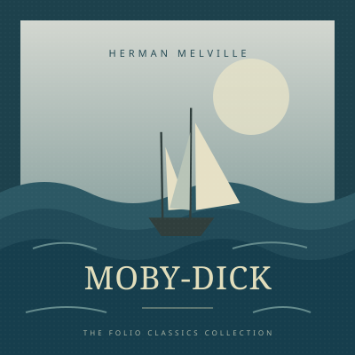

A little more
lost in the story.
Your audiobooks from Plex, Audiobookshelf, Jellyfin, or Emby. Listen offline, or try the free audiobook shelf.
Library
YOUR STORIES, RIGHT HERE.Walden
Henry David Thoreau
Moby-DickHerman MelvilleListen offline
Download whole books to take with you.
Pick up where you left off
Keep your progress in sync with your server.
Listen your way
Chapters, bookmarks, speed controls, and a sleep timer.
Install Folio.
Add it to your home screen. Free, with no subscription.
- 1Open the player in Safari.
- 2Tap Share → Add to Home Screen.
Turn on “Open as Web App” if offered, then tap Add.
- 1Open the player in Chrome.
- 2Choose “Install app” in the browser menu.
It may be called “Add to Home screen.” Follow the prompt.
- 1Open the player in your browser.
- 2Install from Chrome or Edge’s address bar.
On a Mac, use Safari’s File → Add to Dock. You can also keep listening in your browser.
Questions?
Do I need a server?
Try the free LibriVox audiobooks without an account. For your own library, connect Plex, Audiobookshelf, Jellyfin, or Emby. Your server needs HTTPS and must allow browser access (CORS).
How do offline downloads work?
Download a book and wait for every track to finish before going offline. On iPhone and iPad, keep Folio open until it finishes. Background downloads work in supported browsers. Downloads stay on this device; clearing website data or low storage can remove them.
Where is my data stored?
Your connection details, bookmarks, settings, and downloads stay in your browser. Folio connects directly to your server to play books and sync listening progress.